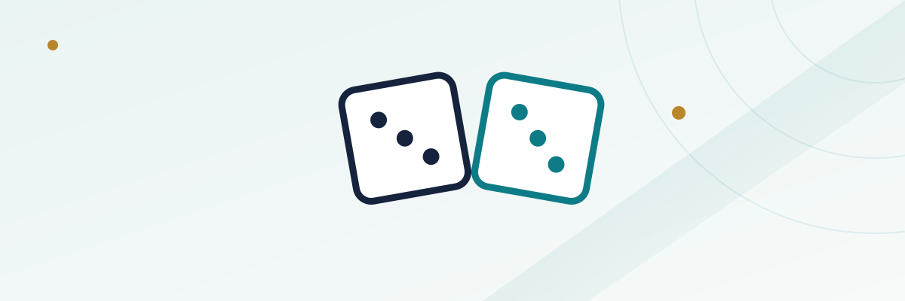

Craps Hardways Explained: Why Hard 6 and Hard 8 Cost So Much More Than Place Bets

Sitting in the middle of a craps layout is a small box of bets that looks almost like an afterthought next to the pass line and the place numbers: the hardways. A dealer will happily take a hardway bet from anyone who asks, and the payouts printed on the felt look generous at first glance — 9-to-1, 7-to-1. What those numbers don't advertise is that a hardway is one of the worst-value regular bets on the table, and understanding exactly why gets at something useful about how craps payouts are built in general.
In this guide
What a hardway bet actually is
A hardway bet wagers that a specific number — 4, 6, 8, or 10 — will be rolled as a pair of matching dice (2-2 for hard 4, 3-3 for hard 6, 4-4 for hard 8, 5-5 for hard 10) before that number is rolled any other way, and before a 7 appears. The bet can be made at any time and stays working continuously unless the player asks the dealer to turn it off, in which case it's placed directly in the corresponding hardway box on the layout rather than the numbered place-bet boxes along the edge.
The name comes from the idea that rolling a number as a matching pair is the "hard" way to make it, as opposed to the "easy way" — any other dice combination that adds up to the same total. Hard 6, for instance, only wins on 3-3; rolling a 4-2, 5-1, 2-4, or 1-5 also produces a 6, but none of those combinations pay a hardway bet, and in fact any of them loses it outright, since an "easy" 6 kills a hard 6 bet exactly the same as a 7 does.
Why "the hard way" is so much less likely than it sounds
Two dice can combine in 36 equally likely ways. A 6 can be made in five of them: 1-5, 5-1, 2-4, 4-2, and 3-3. Only one of those five — 3-3 — is the hard way. That means a hard 6 has to beat not just the seven ways to roll a 7, but also the four easy ways to roll a 6, before it wins. The bet is fighting on two fronts at once: any 7 kills it, and so does any non-matching combination that happens to add up to the same number.
Compare that to a place bet on 6, which wins on any of the five ways to make a 6 and only loses to a 7. A hardway bet on the same number wins on exactly one of those five combinations and loses to eleven of the other combinations that can appear before it hits — the six ways to roll a 7, plus the four easy ways to roll a 6. That's the entire reason the payout looks so much bigger than a place bet's: the bet is genuinely far less likely to land.
The house edge, and why it's so much steeper than a place bet
For hard 6 or hard 8, there are 6 ways to roll a 7 and 4 ways to roll the number the easy way, for 10 losing combinations against the single winning 3-3 (or 4-4) combination — true odds of 10-to-1 against the bettor. Casinos pay hard 6 and hard 8 at 9-to-1, a shortfall from true odds that works out to a house edge of about 9.09%. That's roughly six times steeper than the ~1.52% edge on a place bet on the same two numbers, even though both bets are, on the surface, "betting on 6" or "betting on 8."
| Bet | Payout | True odds against | House edge |
|---|---|---|---|
| Place 6 or 8 | 7-to-6 | 6-to-5 | ~1.52% |
| Hard 6 or 8 | 9-to-1 | 10-to-1 | ~9.09% |
| Hard 4 or 10 | 7-to-1 | 8-to-1 | ~11.11% |
A worked example: hard 6 vs. place 6
Say a player has $6 to put on the 6 and is deciding between the two options. Placed on the 6 as a standard place bet, that $6 wins $7 (7-to-6) whenever any 6 rolls — 1-5, 5-1, 2-4, 4-2, or 3-3 — and loses only to a 7. Put the same $6 on hard 6 instead, and it only wins on 3-3, paying 9-to-1 for $54, but it now loses to a 7 and to every easy 6 that would have paid the place bet. The hardway pays far more when it hits, which is exactly what makes it tempting, but it hits so much less often, and loses to so many more outcomes along the way, that its long-run expected value is considerably worse. Over a long enough session, a player who consistently chooses hard 6 over place 6 with the same-size wager should expect to lose money roughly six times faster, on average, purely from the difference in house edge.
Hard 4 and hard 10: the same idea, an even bigger gap
Hard 4 (2-2) and hard 10 (5-5) push the math further in the house's favor. Each can only be made the easy way twice (3-1/1-3 for a 4, 6-4/4-6 for a 10), so there are 6 ways to roll a 7 plus 2 easy ways to make the number, for 8 losing combinations against the single hard combination — true odds of 8-to-1. Casinos pay hard 4 and hard 10 at 7-to-1, producing a house edge of roughly 11.11%, the steepest of any of the four hardway numbers. It's a smaller gap between payout and true odds in absolute terms than hard 6 or 8, but because the winning combination is even rarer relative to the number of ways to lose, the percentage edge ends up higher, not lower.
Why hardways still exist on the layout
None of this makes hardways a "bad" bet in the sense of being poorly designed — they're doing exactly what a casino wants a proposition bet to do, offering a big multiplier for a small stake and a jolt of variance that a flatter bet like the pass line or a place bet doesn't provide. A $5 hard 4 that turns into $35 on one roll is a genuinely different experience than the slow grind of full odds behind a pass line bet, and plenty of players deliberately budget a small amount specifically for that kind of swing. The mistake isn't playing a hardway occasionally — it's not knowing that the edge on it is multiples worse than the safer bets sitting right next to it on the same table.
See our guides on craps place bets and craps basics and pass line odds for how the lower-edge side of the layout compares.
Common mistakes
The most common mistake is treating a hardway as a bigger version of the equivalent place bet, rather than understanding it as a fundamentally different, much longer-shot wager. A second is chasing a hardway after a near-miss — an easy 6 rolling right before a player was about to bet hard 6, for instance — as if the dice somehow "owe" the hard combination next; each roll is independent, and no sequence of easy numbers changes the odds on the next roll. A third is sizing a hardway bet the same way a player would size a place bet, without accounting for how much more often it will simply lose outright.
Frequently asked questions
Does an easy roll of the same number lose a hardway bet, or just leave it unaffected?
It loses. Rolling a 6 the easy way (say, 4-2) while a hard 6 bet is working ends that bet as a loss, exactly the same as a 7 would — only the matching-pair combination wins it.
Can a hardway bet be turned off during the come-out roll?
Yes, most tables let a player ask the dealer to turn a hardway bet off before a come-out roll, the same courtesy extended to place bets, since a come-out 7 is a normal winning result for the pass line rather than something tied to the hardway number itself.
Is hard 8 any different from hard 6 in terms of odds?
No — 6 and 8 are mirror images in craps math. Hard 8 (4-4) has the identical true odds, payout, and house edge as hard 6, just on the other side of 7.
Why do hard 4 and hard 10 pay less than hard 6 and hard 8 if they're rarer?
They actually pay more per dollar wagered (7-to-1 versus 9-to-1's smaller per-dollar multiple is a common point of confusion) — but the relevant comparison is the payout against the true odds, and on that basis 4 and 10 are the worse of the two pairs, not the better one, because they have fewer ways to be made outright.